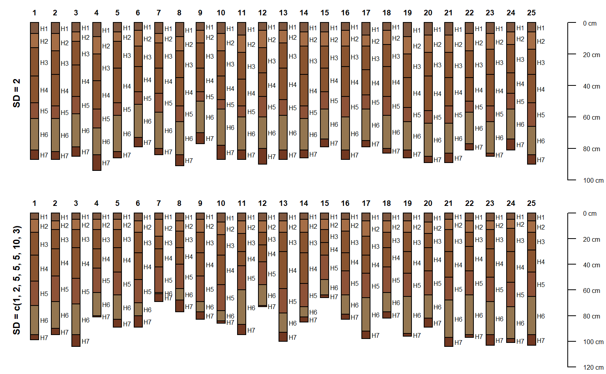
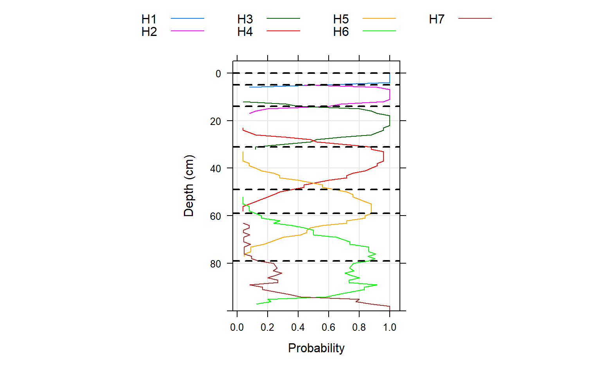

"Perturbs" the boundary between horizons or the thickness of horizons using a standard deviation specified as a horizon-level attribute. This is selected using either boundary.attr or thickness.attr to specify the column name.
The boundary standard deviation corresponds roughly to the concept of "horizon boundary distinctness." In contrast, the horizon thickness standard deviation corresponds roughly to the "variation in horizon thickness" so it may be determined from several similar profiles that have a particular layer "in common."
perturb( p, n = 100, id = NULL, thickness.attr = NULL, boundary.attr = NULL, min.thickness = 1, max.depth = NULL, new.idname = "pID" )
| p | A single-profile SoilProfileCollection |
|---|---|
| n | Number of new profiles to generate (default: 100) |
| id | a vector of profile IDs with length equal to ( |
| thickness.attr | Horizon variance attribute containing numeric "standard deviations" reflecting horizon thickness |
| boundary.attr | Horizon variance attribute containing numeric "standard deviations" reflecting boundary transition distinctness |
| min.thickness | Minimum thickness of permuted horizons (default: |
| max.depth | Depth below which horizon depths are not perturbed (default: |
| new.idname | New column name to contain unique profile ID (default: |
a SoilProfileCollection with n realizations of p
Imagine a Normal curve with mean centered on the vertical (depth axis) at a representative value (RV) horizon bottom depth or thickness. By the Empirical Rule for Normal distribution, two "standard deviations" above or below that "central" mean value represent 95% of the "typical volume" of that horizon or boundary.
perturb can leverage semi-quantitative (ordered factor) levels of boundary distinctness/topography for the upper and lower boundary of individual horizons. A handy function for this is hzDistinctnessCodeToOffset(). The boundary.attr is arguably easier to parameterize from a single profile description or "Form 232" where horizon boundary distinctness classes (based on vertical distance of transition) are conventionally recorded for each layer.
Alternately, perturb can be parameterized using standard deviation in thickness of layers derived from a group. Say, the variance parameters are defined from a set of pedons correlated to a particular series or component, and the template "seed" profile is, for example, the Official Series Description or the Representative Component Pedon.
D.E. Beaudette, A.G. Brown
### THICKNESS # load sample data and convert into SoilProfileCollection data(sp3) depths(sp3) <- id ~ top + bottom # select a profile to use as the basis for simulation s <- sp3[3,] # reset horizon names s$name <- paste('H', seq_along(s$name), sep = '') # simulate 25 new profiles horizons(s)$hz.sd <- 2 # constant standard deviation sim.1 <- perturb(s, n = 25, thickness.attr = "hz.sd") # simulate 25 new profiles using different SD for each horizon horizons(s)$hz.sd <- c(1, 2, 5, 5, 5, 10, 3) sim.2 <- perturb(s, n = 25, thickness.attr = "hz.sd") # plot par(mfrow = c(2, 1), mar = c(0, 0, 0, 0)) plot(sim.1) mtext( 'SD = 2', side = 2, line = -1.5, font = 2, cex = 0.75 ) plot(sim.2)# aggregate horizonation of simulated data # note: set class_prob_mode=2 as profiles were not defined to a constant depth sim.2$name <- factor(sim.2$name) a <- slab(sim.2, ~ name, class_prob_mode=2) # convert to long format for plotting simplicity library(data.table) a.long <- melt(as.data.table(a), id.vars = c('top', 'bottom'), measure.vars = levels(sim.2$name)) # plot horizon probabilities derived from simulated data # dashed lines are the original horizon boundaries library(lattice) xyplot( top ~ value, groups = variable, data = a.long, subset = value > 0, ylim = c(100,-5), type = c('l', 'g'), asp = 1.5, ylab = 'Depth (cm)', xlab = 'Probability', auto.key = list( columns = 4, lines = TRUE, points = FALSE ), panel = function(...) { panel.xyplot(...) panel.abline(h = s$top, lty = 2, lwd = 2) } )### BOUNDARIES # example with sp1 (using boundary distinctness) data("sp1") depths(sp1) <- id ~ top + bottom # specify "standard deviation" for boundary thickness # consider a normal curve centered at boundary RV depth # lookup table: ~maximum thickness of boundary distinctness classes, divided by 3 bound.lut <- c('V'=0.5,'A'=2,'C'=5,'G'=15,'D'=45) / 3 ## V A C G D ## 0.1666667 0.6666667 1.6666667 5.0000000 15.0000000 sp1$bound_sd <- bound.lut[sp1$bound_distinct] # hold any NA boundary distinctness constant sp1$bound_sd[is.na(sp1$bound_sd)] <- 0 quantile(sp1$bound_sd, na.rm = TRUE)#> 0% 25% 50% 75% 100% #> 0.0000000 0.0000000 0.6666667 0.6666667 1.6666667p <- sp1[3] # assume boundary sd is 1/12 midpoint of horizon depth # (i.e. general relationship: SD increases (less well known) with depth) sp1 <- transform(sp1, midpt = (bottom - top) / 2 + top, bound_sd = midpt / 12) quantile(sp1$bound_sd)#> 0% 25% 50% 75% 100% #> 0.08333333 0.92708333 3.75000000 9.25000000 19.41666667perturb(p, boundary.attr = "bound_sd")#> SoilProfileCollection with 100 profiles and 500 horizons #> profile ID: pID | horizon ID: hzID #> Depth range: 62 - 67 cm #> #> ----- Horizons (6 / 500 rows | 10 / 20 columns) ----- #> pID hzID top bottom group bound_distinct bound_topography name texture prop #> 1 1 0 2 2 C W Oa/A SL 14 #> 1 2 2 14 2 G S AB SCL 18 #> 1 3 14 36 2 G S BA SCL 22 #> 1 4 36 53 2 C S Bt1 GRVSCL 30 #> 1 5 53 66 2 G S Bt2 GRVC 50 #> 2 6 0 3 2 C W Oa/A SL 14 #> [... more horizons ...] #> #> ----- Sites (6 / 100 rows | 2 / 2 columns) ----- #> id pID #> P003 1 #> P003 2 #> P003 3 #> P003 4 #> P003 5 #> P003 6 #> [... more sites ...] #> #> Spatial Data: #> [EMPTY]